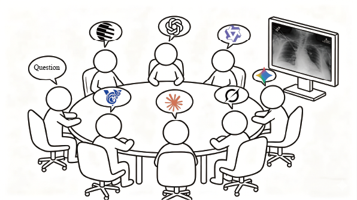
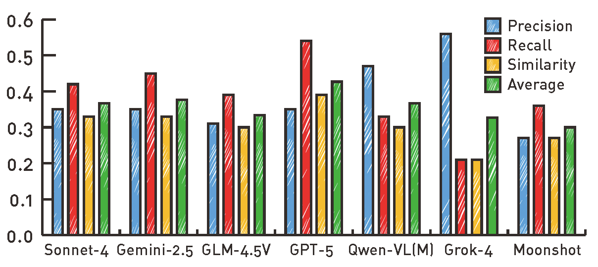
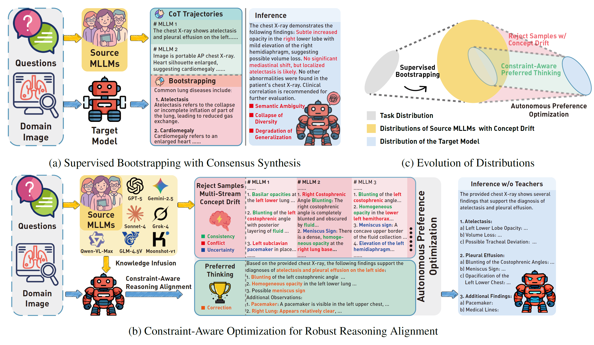
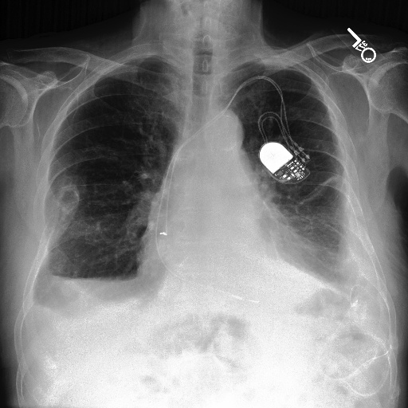

"两小儿辩日·列子" (Two Children Arguing about the Sun, Lie Zi) vividly illustrates Multi-source drift: Different source models, like the two children, often produce conflicting yet seemingly reasonable logical trajectories.
During our initial attempts to align target models using the collective reasoning of multiple state-of-the-art MLLMs, we observed a counter-intuitive phenomenon: simply aggregating their chain-of-thought (CoT) trajectories often degraded the target model's robustness, leading to severe hallucinations and semantic inconsistencies. By systematically tracing the generation processes, we discovered that these errors did not stem from individual source inadequacies, but rather from the fundamentally conflicting reasoning paradigms across different models. This critical observation led us to realize that the multi-source alignment process is not a static knowledge transfer, but a dynamic and non-stationary challenge characterized by inter-model concept drift.

Conceptual illustration of multi-stream drift.

Quantitative measurement of concept drift among source MLLMs.
Distilled Student
Based on the provided PA chest X-ray, the following key findings support the diagnoses of atelectasis and pleural effusion:
1. Atelectasis:
2. Pleural Effusion:
Example of drift-biased target model.
How can we autonomously turn drift into constraint, thereby achieving robust reasoning alignment in non-stationary environments?

The main contributions of our methods.
(a) Supervised Bootstrapping with Consensus Synthesis. In the initial phase, the target model undergoes Supervised Bootstrapping to establish a broad capability covering by assimilating the collective knowledge of source MLLMs. However, as shown in the inference block, this naive integration inevitably inherits non-stationary inter-model drift, resulting in hallucinations and semantic ambiguities.
(b) Constraint-Aware Optimization for Robust Reasoning Alignment. To mitigate the inherited drift, we propose a Constraint-Aware protocol. The model first employs in-context extraction to synthesize self-consistent consensus trajectories as preferred thinking. Crucially, rather than simply discarding the conflicting source outputs, APO repurposes them as negative constraints within a Plackett-Luce preference formulation, explicitly suppressing the probability of generating drifting patterns.
(c) Evolution of Distributions. The distributional dynamics of our alignment process. Initially, bootstrapping projects the target model into the union of source distributions (Yellow). Subsequently, APO refines this space by treating the drifting regions (Red) as decision boundaries to be avoided, effectively carving out a robust consensus manifold (Green) for reliable reasoning.
Consider $N$ CoT streams corresponding to $N$ source models. Let the collective state at reasoning step $j$ be denoted by $\mathcal{S}_{j} = (s^{1}_{j}, \ldots, s^{N}_{j})$, where $s^{u}_{j}$ represents the state of the $u$-th source model. We define the reasoning alignment process as experiencing concept drift if the joint distribution of the collective states evolves non-stationarily across steps. That is, for any two distinct reasoning steps $j$ and $j+\Delta$, the joint probability distributions differ:
$$ P_{j}(\mathcal{S}) \neq P_{j+\Delta}(\mathcal{S}) $$
We recast multi-source reasoning integration as a constraint satisfaction problem. The target model undergoes Supervised Bootstrapping to establish a broad capability covering. To mitigate inherited drift, APO employs in-context extraction to synthesize self-consistent consensus trajectories. Crucially, rather than discarding conflicting source outputs, APO repurposes them as negative constraints within a Plackett-Luce preference formulation:
$$ P(t^{+} \succ \mathcal{T} | v,l) = \frac{\exp (r(v,l,t^{+}))}{\exp (r(v,l,t^{+})) + \sum_{u=1}^{N} \exp (r(v,l,\tau^{u}))} $$
Where:
This effectively minimizes the likelihood of generating drifting patterns while maximizing the consensus manifold.
Beyond comparing with standard domain-specific baselines, a more rigorous evaluation benchmarks our 7B-parameter target model against the proprietary source MLLMs, which possess vastly superior parameter scales, such as GPT-5 and Claude Sonnet-4. As visualized below, despite the immense disparity in model size, our approach achieves the highest average accuracy of 0.78 across all diseases, surpassing every single source MLLM. This counter-intuitive result empirically demonstrates that our constraint-aware optimization empowers the compact target model to synthesize a consensus manifold that effectively integrates the diverse strengths of the source ensemble, allowing it to stand on the shoulders of giants.
| MLLMs | Con. | PE | Pna. | Pnx. | Ede. | Avg. |
|---|---|---|---|---|---|---|
| Source MLLMs with Huge Parameters | ||||||
| GPT-5 | 0.75 | 0.68 | 0.89 | 0.90 | 0.52 | 0.75 |
| Gemini-2.5 | 0.28 | 0.61 | 0.40 | 0.94 | 0.42 | 0.53 |
| Sonnet-4 | 0.89 | 0.69 | 0.48 | 0.15 | 0.15 | 0.47 |
| Qwen-VL-Max | 0.54 | 0.65 | 0.40 | 0.95 | 0.64 | 0.64 |
| Grok-4 | 0.43 | 0.41 | 0.36 | 0.97 | 0.61 | 0.56 |
| GLM-4.5V | 0.59 | 0.67 | 0.52 | 0.96 | 0.72 | 0.69 |
| Moonshot | 0.13 | 0.46 | 0.77 | 0.88 | 0.19 | 0.48 |
| Target Model (7B MLLM) | ||||||
| Ours | 0.84 | 0.67 | 0.78 | 0.96 | 0.65 | 0.78 |
Evaluation results of multiple source MLLMs on classification of MS-CXR-T for comparison. Top-1 accuracy is applied to evaluate the performance of different methods. The best-performing models are highlighted in red, with the second-best in blue. The comparison MLLMs include: Claude Sonnet-4, Gemini-2.5, GLM-4.5V, GPT-5, Qwen-VL-Max, Grok-4 and Moonshot-v1.
To evaluate reasoning alignment in non-stationary environments, a dataset exhibiting high-variance inter-model drift is essential. Existing benchmarks typically rely on single-source annotations or static consensus, failing to capture the dynamic conflicts inherent in multi-stream reasoning.
Addressing this gap, we introduce CXR-MAX (Multi-source Alignment for X-rays), a large-scale benchmark designed to facilitate the study of autonomous preference optimization. CXR-MAX extends the MIMIC-CXR dataset by aggregating reasoning trajectories from seven distinct, publicly available MLLMs. CXR-MAX provides 170,982 distillation instances of reasoning trajectories covering 14 thoracic pathologies.

Claude Sonnet-4
Looking at this chest X-ray, I can identify several findings that support the diagnoses of atelectasis and pleural effusion:
Evidence of Atelectasis:
Evidence of Pleural Effusion:
The combination of these findings provides clear radiographic evidence supporting both diagnoses...
GPT-5-nano
Key findings that support atelectasis and pleural effusion:
Right lung and mediastinal contours are otherwise
relatively unremarkable.
In short: left basilar atelectasis with
a small left pleural effusion. Correlate clinically...
GLM-4.5V
To determine the basis for diagnosing Atelectasis and Pleural Effusion in the chest X-ray, we analyze key imaging features:
1. Pleural Effusion:
Pleural effusion is
identified by blunting of the costophrenic angles... In this
image, the right costophrenic angle appears blurred and loses its
typical sharp contour...
2. Atelectasis:
Atelectasis refers to partial
lung collapse, which shows as increased opacity (whiteness)
in the affected lung regions... In this X-ray, there are areas of
increased density in the lower lung fields (particularly on the
right side)...
In summary, the diagnostic clues are the blunted right costophrenic angle and increased opacification in the lower lung zones.
Gemini-2.5-flash-lite
Based on the chest DR image, here are the findings that support the diagnoses of Atelectasis and Pleural Effusion:
1. Pleural Effusion:
2. Atelectasis:
In summary, the image demonstrates a large right-sided pleural effusion... accompanied by signs of volume loss in the right hemithorax...
Moonshot-v1
As an AI, I'm not capable of providing medical diagnoses or interpreting medical images with the same level of expertise as a trained medical professional. However, I can provide general information...
Atelectasis is a condition where one or both lungs partially or completely collapse. On an X-ray, this might appear as an area of increased opacity...
Pleural effusion refers to the buildup of excess fluid in the pleural cavity... This can cause the lung to partially collapse and may appear on an X-ray as a layering density at the lung base or costophrenic angle...
Qwen-VL-Max
The chest X-ray (DR image) shows several findings consistent with atelectasis and pleural effusion, particularly on the left side. Here's the basis for each diagnosis:
1. Pleural Effusion (Left Side)
2. Atelectasis (Left Lower Lobe Likely)
Summary:
✔ Pleural effusion:
Left-sided, based on blunted costophrenic angle, homogeneous
opacity, and diaphragmatic elevation.
✔
Atelectasis: Likely left lower lobe, secondary to compressive
atelectasis from the adjacent pleural effusion.
Grok-4
I can explain the basis for the diagnosis of atelectasis and pleural effusion based on an analysis of the chest X-ray (CXR) you provided. I'll keep this concise, objective, and focused on the visible findings...
1. Basis for Pleural Effusion:
2. Basis for Atelectasis:
@inproceedings{yang2026turning,
title={Turning Drift into Constraint: Robust Reasoning Alignment in Non-Stationary Multi-Stream Environments},
author={Yang, Xiaoyu and Yu, En and Duan, Wei and Lu, Jie},
booktitle={Forty-third International Conference on Machine Learning},
year={2026},
url={https://openreview.net/forum?id=jgebUtw1lA}
}